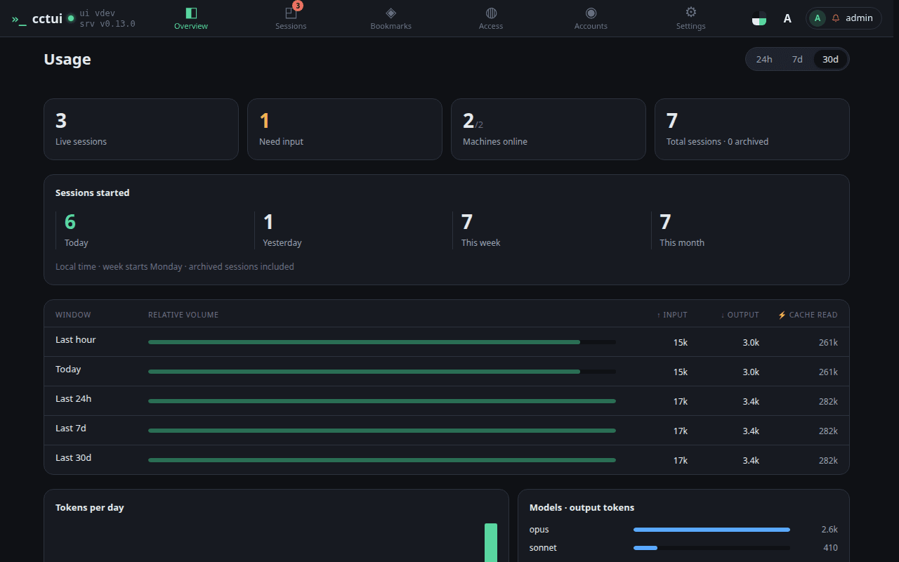
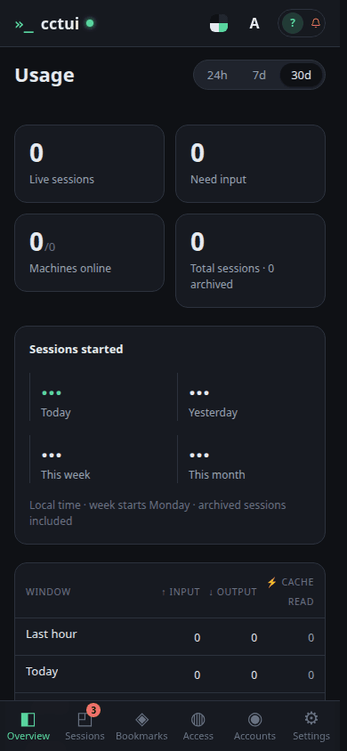
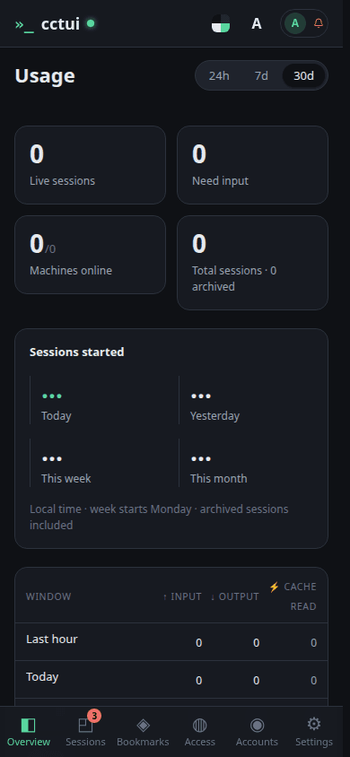

The fleet in four numbers Sessions running now, sessions waiting on you, machines online, and the all-time total. They read zero until your first run.

Is today busier than usual? The same count over today, yesterday, this week and this month. One day on its own means little; next to the others it tells you whether the fleet is speeding up.Tokens by time window The same usage read over the last hour, day, week and month, split into input, output and cached tokens. Cached tokens are re-read context and cost a fraction of fresh input.Where the tokens went Daily volume and a per-model breakdown, so an expensive habit shows up before the bill does. A model you did not mean to use is usually visible here first.
viewport=mobile theme=dark
The fleet in four numbers Sessions running now, sessions waiting on you, machines online, and the all-time total. They read zero until your first run.

Is today busier than usual? The same count over today, yesterday, this week and this month. One day on its own means little; next to the others it tells you whether the fleet is speeding up.Tokens by time window The same usage read over the last hour, day, week and month, split into input, output and cached tokens. Cached tokens are re-read context and cost a fraction of fresh input.

Where the tokens went Daily volume and a per-model breakdown, so an expensive habit shows up before the bill does. A model you did not mean to use is usually visible here first.